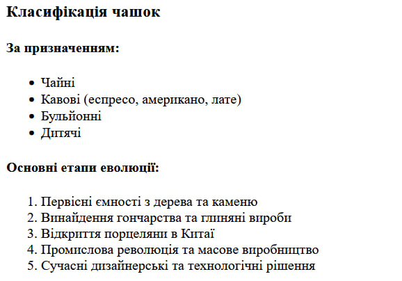
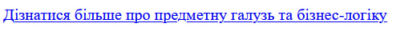
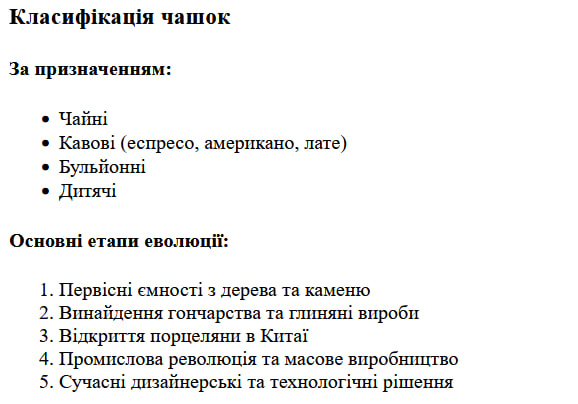
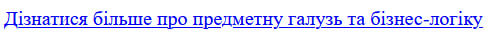

Вітаю!
Оберіть розділ ліворуч, щоб переглянути вміст.
СТРУКТУРА HTML-ДОКУМЕНТА, ВИБІР ПРЕДМЕТНОЇ ГАЛУЗІ, РОБОТА З ПОСИЛАННЯМИ, ТАБЛИЦЯМИ, ЗОБРАЖЕННЯМИ, СПИСКАМИ В HTML-ДОКУМЕНТІ
Мета: придбати практичні навички роботи з HTML-документом, таблицями, зображеннями, посиланнями, списками, формами. Створити шаблон звітного HTML-документом для відображення результатів роботи всіх лабораторних робіт.
Посилання на виконані завдання лабораторної роботи:
- Репозиторій власного веб-застосунку (GitHub)
- Власний веб-застосунок (Жива сторінка)
- Репозиторій самостійної роботи №1 (GitHub)
- Самостійна робота №1 (Жива сторінка)
- Репозиторій звітного HTML - документу
- Звітний HTML - документ (Жива сторінка)
- Дизайн мобільного застосунку (Figma)
- Дизайн постера (Figma)
Опис предметного середовища
Майбутній веб-застосунок присвячений чашкам різних видів та культур.
Основний функціонал:
- Інформаційні сторінки з описом видів та типів чашок (чайні, кавові, декоративні, колекційні).
- Розділ з історією виникнення та розвитку чашок у різних країнах.
- Галерея зображень чашок з описом.
- Каталог чашок з можливістю сортування та фільтрації:
- за матеріалом (фарфор, скло, глина, метал);
- за об’ємом;
- за країною походження.
- Пошук чашки за назвою.
- Сторінка з цікавими фактами про чашки.
- Форма для зворотного зв’язку (ім’я, email, коментар).
Бізнес-логіка (сценарій користувача)
Користувач заходить на сайт. Вибирає розділ: «Каталог», «Історія», «Галерея», «Факти», «Про сайт». У каталозі користувач може:
- переглянути список чашок;
- відфільтрувати за типом, матеріалом, країною;
- відсортувати за популярністю, алфавітом або датою додавання.
У галереї переглядає фото чашок з описами. У розділі «Історія» читає текстову інформацію. На сторінці «Цікаві факти» знайомиться з короткими цікавими матеріалами. Використовує форму зворотного зв’язку для відгуків чи пропозицій.
Функціональні вимоги
- Відображення інформаційних сторінок (опис чашок, історія, факти).
- Галерея зображень чашок.
- Каталог з можливістю: пошуку за назвою; фільтрації за матеріалом/типом/країною; сортування (за алфавітом, популярністю, датою).
- Форма зворотного зв’язку.
- Меню навігації для переходу між сторінками.
Нефункціональні вимоги
- Адаптивність для ПК та мобільних пристроїв.
- Зручний та інтуїтивний інтерфейс.
- Швидке завантаження сторінок (≤ 3 секунд).
- Кросбраузерність (Chrome, Firefox, Edge, Safari).
- Мінімалістичний дизайн з акцентом на контент.
- Легке розширення каталогу (можливість додати нові чашки).
Висновки
В ході виконання лабораторної роботи я придбав практичні навички роботи з основними елементами HTML. Я навчився створювати структуру веб-документа, використовуючи семантичні теги, розробив концепцію предметної галузі для майбутнього веб-застосунку та визначив його функціональні та нефункціональні вимоги. Також я опанував роботу з посиланнями, списками, таблицями та зображеннями, що дозволило мені створити цей звітний HTML-документ, який є основою для всіх наступних лабораторних робіт.
HTML-код таблиць
Теоретичні відомості про теги для таблиць
Для створення таблиць в HTML використовується набір тегів, кожен з яких виконує свою роль:
- <table> — основний тег-контейнер, який оголошує створення таблиці. Атрибут
border="1"є застарілим способом додати рамку, сьогодні для цього переважно використовують CSS. - <thead> — (table head) групує рядки, що є заголовком таблиці.
- <tbody> — (table body) групує основні рядки з даними таблиці.
- <tr> — (table row) створює новий рядок у таблиці.
- <th> — (table header) створює комірку-заголовок усередині рядка. Текст у такій комірці за замовчуванням є жирним та вирівняним по центру.
- <td> — (table data) створює звичайну комірку з даними всередині рядка.
Код для створення порівняльної таблиці матеріалів з лабораторної роботи №1:
<h3>Порівняльна таблиця матеріалів</h3>
<table border="1">
<thead>
<tr>
<th>Матеріал</th>
<th>Переваги</th>
<th>Епоха</th>
</tr>
</thead>
<tbody>
<tr>
<td>Глина</td>
<td>Доступність, простота виготовлення</td>
<td>Стародавній світ</td>
</tr>
<tr>
<td>Порцеляна</td>
<td>Естетичність, зберігання тепла</td>
<td>Середньовіччя - Новий час</td>
</tr>
<tr>
<td>Скло</td>
<td>Хімічна інертність, прозорість</td>
<td>Новий час - Сучасність</td>
</tr>
<tr>
<td>"Розумний" пластик</td>
<td>Легкість, додаткові функції</td>
<td>Майбутнє</td>
</tr>
</tbody>
</table>HTML-код зображення
Теоретичні відомості про теги для зображень
Для вставки зображень на веб-сторінку використовується одинарний (непарний) тег <img>. Він має декілька ключових атрибутів:
- src (source) — найголовніший атрибут, який вказує шлях (URL) до файлу зображення.
- alt (alternative text) — задає альтернативний текст, який буде відображатися, якщо зображення не завантажиться. Цей текст також важливий для доступності (для скрінрідерів) та для пошукової оптимізації (SEO).
- width — визначає ширину зображення в пікселях.
- height — визначає висоту зображення в пікселях. Задавати розміри є гарною практикою, оскільки браузер резервує місце для зображення ще до його повного завантаження, що запобігає "стрибкам" контенту.
Код для відображення галереї зображень з лабораторної роботи №1:
<div>
<h2>Різноманітність чашок крізь епохи</h2>
<p>Від простих глиняних виробів до високотехнологічних гаджетів.</p>
<div>
<img src="../img/ancient1.jpg" alt="Стародавня глиняна чашка" width="200" height="200">
<img src="../img/modern1.jpg" alt="Сучасна керамічна чашка" width="200" height="200">
<img src="../img/future2.jpg" alt="Концепт чашки майбутнього" width="200" height="200">
</div>
</div>HTML-код форми
Теоретичні відомості про теги для списків
У вашій роботі було використано два основних типи списків для структурування даних:
- <ul> (unordered list) — створює маркований список. Кожен елемент списку за замовчуванням позначається маркером (зазвичай кружечком).
- <ol> (ordered list) — створює нумерований список. Кожен елемент автоматично нумерується (1, 2, 3...).
- <li> (list item) — цим тегом позначається кожен окремий пункт як у маркованому, так і в нумерованому списку. Тег <li> завжди розміщується всередині контейнерів <ul> або <ol>.
Код для створення форми зворотного зв'язку з лабораторної роботи №1:
<h2>Форма для зворотного зв'язку</h2>
<p>Поділіться своєю думкою або поставте запитання!</p>
<form action="#" method="post">
<div>
<label for="user-name">Ваше ім'я:</label><br>
<input type="text" id="user-name" name="userName" placeholder="Введіть ім'я">
</div>
<br>
<div>
<label for="user-email">Ваш Email:</label><br>
<input type="email" id="user-email" name="userEmail" placeholder="example@email.com">
</div>
<br>
<div>
<label for="cup-type">Якому типу чашок ви віддаєте перевагу?</label><br>
<select id="cup-type" name="cupType">
<option value="ceramic">Керамічні</option>
<option value="glass">Скляні</option>
<option value="porcelain">Порцелянові</option>
</select>
</div>
<br>
<div>
<label for="feedback">Ваш відгук:</label><br>
<textarea id="feedback" name="feedback" rows="4" cols="50" placeholder="Напишіть тут..."></textarea>
</div>
<br>
<button type="submit">Надіслати</button>
</form> 



Код головної сторінки
Повний код файлу `index.html` з лабораторної роботи №1:
<!DOCTYPE html>
<html lang="uk">
<head>
<meta charset="UTF-8">
<meta name="viewport" content="width=device-width, initial-scale=1.0">
<title>Світ Чашок: Історія та Сучасність</title>
</head>
<body>
<header>
<h1>Подорож у світ чашок: від давнини до майбутнього</h1>
<p>Ласкаво просимо на наш сайт, присвячений історії, сучасності та майбутньому такого звичного предмета, як чашка.</p>
</header>
<main>
<div>
<h2>Різноманітність чашок крізь епохи</h2>
<p>Від простих глиняних виробів до високотехнологічних гаджетів.</p>
<div>
<img src="../img/ancient1.jpg" alt="Стародавня глиняна чашка" width="200" height="200">
<img src="../img/modern1.jpg" alt="Сучасна керамічна чашка" width="200" height="200">
<img src="../img/future2.jpg" alt="Концепт чашки майбутнього" width="200" height="200">
</div>
</div>
<hr>
<h3>Порівняльна таблиця матеріалів</h3>
<table border="1">
<thead>
<tr>
<th>Матеріал</th>
<th>Переваги</th>
<th>Епоха</th>
</tr>
</thead>
<tbody>
<tr>
<td>Глина</td>
<td>Доступність, простота виготовлення</td>
<td>Стародавній світ</td>
</tr>
<tr>
<td>Порцеляна</td>
<td>Естетичність, зберігання тепла</td>
<td>Середньовіччя - Новий час</td>
</tr>
<tr>
<td>Скло</td>
<td>Хімічна інертність, прозорість</td>
<td>Новий час - Сучасність</td>
</tr>
<tr>
<td>"Розумний" пластик</td>
<td>Легкість, додаткові функції</td>
<td>Майбутнє</td>
</tr>
</tbody>
</table>
<hr>
<h3>Класифікація чашок</h3>
<h4>За призначенням:</h4>
<ul>
<li>Чайні</li>
<li>Кавові (еспресо, американо, лате)</li>
<li>Бульйонні</li>
<li>Дитячі</li>
</ul>
<h4>Основні етапи еволюції:</h4>
<ol>
<li>Первісні ємності з дерева та каменю</li>
<li>Винайдення гончарства та глиняні вироби</li>
<li>Відкриття порцеляни в Китаї</li>
<li>Промислова революція та масове виробництво</li>
<li>Сучасні дизайнерські та технологічні рішення</li>
</ol>
<hr>
<h2>Форма для зворотного зв'язку</h2>
<p>Поділіться своєю думкою або поставте запитання!</p>
<form action="#" method="post">
<div>
<label for="user-name">Ваше ім'я:</label><br>
<input type="text" id="user-name" name="userName" placeholder="Введіть ім'я">
</div>
<br>
<div>
<label for="user-email">Ваш Email:</label><br>
<input type="email" id="user-email" name="userEmail" placeholder="example@email.com">
</div>
<br>
<div>
<label for="cup-type">Якому типу чашок ви віддаєте перевагу?</label><br>
<select id="cup-type" name="cupType">
<option value="ceramic">Керамічні</option>
<option value="glass">Скляні</option>
<option value="porcelain">Порцелянові</option>
</select>
</div>
<br>
<div>
<label for="feedback">Ваш відгук:</label><br>
<textarea id="feedback" name="feedback" rows="4" cols="50" placeholder="Напишіть тут..."></textarea>
</div>
<br>
<button type="submit">Надіслати</button>
</form>
</main>
<footer>
<hr>
<p>Для детального аналізу нашого проєкту, будь ласка, перегляньте сторінку з описом.</p>
<a href="details.html">Дізнатися більше про предметну галузь та бізнес-логіку</a>
<p>© 2025 Світ Чашок</p>
</footer>
</body>
</html>